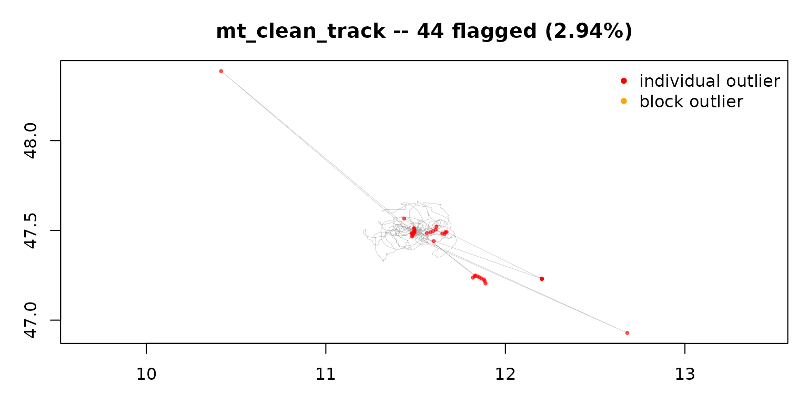

Troubleshooting: when mt_clean_track() doesn't do what you want
Source:vignettes/OUTLIER_6_troubleshooting.Rmd
OUTLIER_6_troubleshooting.Rmdmt_clean_track() works well on most tracks, but no
automatic cleaner is right every time — and because there is no ground
truth for outliers, “right” is partly your judgement. This guide maps
the common symptoms to their usual causes and remedies.
Whatever the symptom, start the same way: plot the result,
and run the health check mt_diagnose_clean_track()
(see
vignette("OUTLIER_2_diagnose_clean_track", package = "move2utils")).
It tells apart “the track was dirty” from “the cleaner was misled”, and
most of the remedies below follow directly from what it shows.
| Symptom | Usual cause | Remedy |
|---|---|---|
| Removed too much | animal has two behaviours | clean each state separately |
| Removed too much | coarse / irregular sampling | clean at native resolution; mind the scale |
| Removed too much | inferred speed cap too low | supply v_max or mass +
mode
|
| Removed too much | mixed sensors / error regimes | clean one regime per call |
| Missed obvious errors | coherent spoof / jam block | supply v_max to engage block removal |
| Missed obvious errors | rare modest spike on a slow species | inspect by hand; try a more sensitive rule |
| Missed obvious errors | whole-track shift / off-site cluster | check distances by hand (step-level checks can’t see it) |
| Error / crash | empty geometries, duplicate or unsorted times, wrong CRS | pre-process (below) |
It removed too much
The animal has two behaviours
The most common cause. An animal that both rests and commutes (or
migrates) has two very different kinds of step. Lumped together, the
slower behaviour’s normal steps can look anomalous against the faster
one, and get flagged. mt_diagnose_clean_track() flags this
as bimodal behaviour. The remedy is to clean each behaviour separately,
by passing a behaviour column to state =:
clean <- mt_clean_track(track, state = "behaviour")See
vignette("OUTLIER_3_state_conditional", package = "move2utils").
The sampling is coarse or irregular
Cleaning is not scale-invariant: the same track sampled every few seconds and every few hours can clean differently, because coarse sampling can make ordinary rest-and-travel structure look bimodal. If you downsampled the track, try cleaning at the original resolution; if the tag itself samples coarsely, treat a raised flag rate with the state-conditional remedy above rather than accepting it.
The inferred speed cap is too low
With no v_max, the cleaner infers a speed cap from the
track. On a fast-moving species this can land inside the animal’s real
speed range, so the block-removal step over-fires. Give it the animal’s
real top speed (or a body-mass estimate) and check the candidates
first:
mt_suggest_speed_cap(track, mass = 5, mode = "flying") # inspect, then:
clean <- mt_clean_track(track, v_max = 30)The track mixes sensors with different error
A track that combines, say, GPS and Argos Doppler fixes mixes two
very different error regimes, and a single cleaning pass cannot serve
both. Clean one regime at a time. Network-side geolocation streams
(Sigfox-geo, some LoRa) are not position estimates at all and should be
excluded entirely, not cleaned. See
vignette("OUTLIER_heterogeneous_error_regimes", package = "move2utils").
It missed obvious errors
A coherent block of fake locations (spoof or jam)
A run of fabricated locations (a GPS spoof, or a jamming burst) can
be internally consistent — its individual steps are small — so the
per-fix checks only see its edges. Giving the cleaner the animal’s real
top speed, via v_max or mass +
mode, hands it a firm connectivity ceiling so it can
recover the whole block, not just the seam.
The package ships a fully synthetic demonstration track that carries
one of every gross-error class — including a coherent spoof block and a
jamming burst — with a ground-truth error_type column you
can score against:
source(system.file("extdata", "make_demo_track.R", package = "move2utils"))
track <- make_demo_track()
## the same pre-processing as "It errored or crashed", below
track <- track[!sf::st_is_empty(track), ]
track <- move2::mt_filter_unique(track, criterion = "first")
clean <- mt_clean_track(track, mass = 0.5, mode = "flying",
remove = FALSE, silent = TRUE)
## how much of each fabricated block was recovered?
table(error_type = clean$error_type, flagged = clean$is_outlier)[
c("spoof", "jam"), ]
#> flagged
#> error_type FALSE TRUE
#> spoof 1 9
#> jam 2 10Both blocks are recovered almost in full. Supplying the cap is the robust choice for coherent blocks: when a block sits far enough off-route that only its boundary steps look fast, the cap is exactly the ceiling the block-removal step needs to isolate it — and supplying one can only help, never hurt, block recovery.
A rare, modest spike on a slow-moving animal
A single out-and-back excursion on a slow species can be small enough
to sit within ordinary GPS error — there is simply no reliable signal to
separate it from good data, and no automatic method can recover what
isn’t there. Do not chase these blindly. If you suspect them, inspect
the track, try the more sensitive
consensus = "weighted_evidence" rule (see the next
section), and remove the rest by hand.
A whole-track shift or an off-site cluster
The four checks are step-level: they compare each location to its neighbours. A whole-track offset, or a tight cluster of fixes parked at one wrong place, has no unusual step and so slips through. Check it directly — for example, the distance of each location from the track’s centre — and remove by hand.
It errored or crashed
Most errors come from the track not being in the expected shape. Apply the standard pre-processing first:
library(move2); library(sf); library(dplyr)
track <- track[!st_is_empty(track), ] # drop empty geometries
track <- mt_filter_unique(track, "first") # drop duplicate timestamps
track <- arrange(track, mt_track_id(track), mt_time(track)) # sort in timemt_clean_track() auto-projects longitude/latitude
internally, so you do not need to project first. If an error persists
after pre-processing, please report it.
Choosing a different decision rule
The default rule, evidence_corroborated, flags a
location when the checks’ combined evidence is positive and either two
checks agree or the there-and-back check alone is overwhelming. Two
alternatives are worth knowing, set via consensus =:
-
"class_aware"— the previous default. Stricter about requiring corroboration, so slightly better on coherent clusters; use it if the default removes a near-bulk point you wanted kept. -
"weighted_evidence"— more sensitive: it flags on positive combined evidence alone, without the corroboration safeguard. Use it when the default misses a conspicuous point, accepting a few more false alarms.
clean <- mt_clean_track(track, consensus = "weighted_evidence")For fine control, the standalone mt_flag_consensus()
returns a combined_evidence column — a single number per
location summarising how strongly the checks distrust it. Sorting by it,
or thresholding it yourself, gives you a one-dial sensitivity control
without changing any detector.
Still stuck?
Each check is available on its own —
mt_flag_outliers_bridge() (path position),
mt_flag_outliers_detour() (there-and-back),
mt_flag_outliers() (unusual movement),
mt_flag_speed_cap() (speed) — so you can inspect one signal
at a time, or build a pipeline of your own. The
OUTLIER_example_* vignettes show full cleanings narrated on
real tracks, which is often the quickest way to see how the pieces fit
your own data.